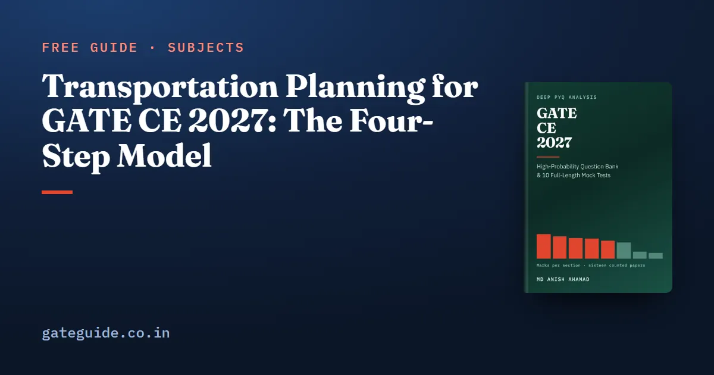

Transportation Planning for GATE CE 2027: The Four-Step Model

Transportation Planning is new in the GATE CE 2027 syllabus, and across all 1,040 questions in the sixteen Civil papers from 2019 to 2026 it has drawn zero marks. Nobody, therefore, can tell you how it will be asked. What you can do is learn the four-step travel demand model properly: what each step answers, what it takes in and what it hands on. That takes an afternoon, and this guide covers it.
In this guide
Key takeaways
- The 2027 syllabus adds a fourth Transportation topic: four-step travel demand modelling, meaning trip generation, trip distribution, mode choice and traffic assignment, "and its applications".
- It drew zero marks in all sixteen counted papers because it was not on the syllabus. The zero says nothing about how it will be examined.
- The four steps answer four questions in a fixed order: how many trips, between which zones, by which mode, on which route.
- Also new: classifications of roadways, design vehicle, interchanges and level of service.
- The rest of the section is well evidenced: mean 10.0 marks a paper, range 6, three examined topics at 39, 35 and 26 per cent.
What changed, exactly
The 2026 syllabus gave Transportation Engineering three topics: Transportation Infrastructure, Highway Pavements and Traffic Engineering. The words travel, trip, demand, choice and assignment appear nowhere in it. The 2027 document adds a fourth topic, "Transportation Planning: Four step travel demand modelling – trip generation, trip distribution, mode choice, traffic assignment and its applications."
Read alone, an eight-year zero suggests skipping it. Read against the syllabus, it means the opposite: the topic was not on the syllabus, and unlike some other 2027 additions it was never set early. The record holds no information about it in either direction. The book's judgement, stated as judgement, is that a newly named topic is among the more likely places for a question in the first paper under a revised syllabus, since it is the change the organisers chose to make. That is a reading of the syllabus, not a count.
The four steps, and how they chain
The model begins by dividing a study area into zones and describing the road and transit network that connects them. The four steps then run in sequence, each one's output becoming the next one's input.
| Step | The question it answers | What it takes in | What it hands on |
|---|---|---|---|
| 1. Trip generation | How many trips start and end in each zone? | Land use and household data per zone | Trip ends: productions and attractions by zone |
| 2. Trip distribution | Between which pairs of zones do they travel? | Trip ends, travel cost between zones | An origin-destination (O-D) matrix |
| 3. Mode choice | By which mode: car, bus, rail, walking? | The O-D matrix, time and cost by mode | One O-D matrix per mode |
| 4. Traffic assignment | By which route through the network? | Each mode's O-D matrix, the network | Volumes on each link |
1. Trip generation
This step counts trips without saying where they go. Each zone's trip productions and attractions are estimated from what is in it: population, households, car ownership, income, employment, floor space. The usual tools are trip rates per household, regression on land-use variables, and category analysis. The output is two numbers per zone, and nothing yet links one zone to another.
2. Trip distribution
This step joins the trip ends into flows between zone pairs, producing the O-D matrix. The standard tool is the gravity model: trips between zones and grow with the trips produced at and attracted to , and fall as the cost of travel between them rises, . The name is an analogy with Newtonian gravity. Growth-factor methods such as Fratar and Furness do a different job: they update an existing O-D matrix by scaling it to new trip totals. In a doubly constrained model, each row of the matrix sums to that zone's productions and each column to its attractions.
3. Mode choice
This step splits each cell of the O-D matrix between the available modes. The usual tool is a logit model: each mode is given a utility built from its travel time and cost, and the mode with the higher utility takes the larger share of trips, though never all of them. Mode choice comes after distribution in the classic sequence, so it works on zone pairs rather than on zones.
4. Traffic assignment
The last step decides routes and loads the trips onto network links. All-or-nothing assignment sends every trip on the shortest path and ignores congestion. User equilibrium follows Wardrop's first principle: no traveller can cut their own travel time by changing route alone, so every used route between a zone pair has equal and minimum travel time. The system optimum is different, minimising total travel time across everyone, and the gap between the two explains why added road capacity can sometimes make total congestion worse. Incremental assignment loads the matrix in portions, updating link times as it goes.
The link volumes that come out of step 4 are what an engineer then checks against capacity, which is where this new topic meets another addition, level of service.
The model's known weakness is conceptual and worth one line: the steps run in sequence, so congestion found in step 4 does not naturally feed back to change trip-making in steps 1 to 3. Practice iterates between the steps to correct for it.
What you can and cannot know about the question
You cannot know the format. MSQs have grown from none in the 2019 and 2020 papers to between 3 and 15 per paper from 2022 onwards, so a statement-checking question is one possibility, and a small gravity-model calculation is another. Neither is a forecast. The marking scheme, which is common to every GATE paper, shows what an MSQ, MCQ or NAT costs if you get it wrong.
What you can know is the sequence, the question each step answers, its input and output, and the names of the standard methods. Any question on the topic will assume those.
The other 2027 additions
- Classifications of roadways. The functional hierarchy of roads, from expressways and national highways down to village roads, with a separate urban hierarchy. Classification decides which design standards apply. Read the IRC classification once.
- Design vehicle. The vehicle whose dimensions and turning path set the geometry: lane width, turning radii, clearances.
- Interchanges. Traffic Engineering's intersections line now adds interchanges, the grade-separated junctions whose ramps let streams cross without conflict, such as the trumpet, diamond and cloverleaf.
- Level of service. Added beside highway capacity. It grades operating conditions on a letter scale, conventionally A for free flow down to F for breakdown. Newly named but not new to the paper: 2020 Set 1, Q.55 asked for the extra lanes needed to carry a traffic at LOS C.
All four are descriptive and cheap. Level of service is the only one a counted paper has set; classifications of roadways, the design vehicle and interchanges never have been. The syllabus wording can change before the exam, so confirm it on gate2027.iitm.ac.in.
The examined three: what the record shows
The evidence is 103 questions and 160 marks, counted question by question from Set 1 and Set 2 of every year and checked against the official keys. Civil is sat as two different papers each year; how GATE normalises the two sets explains how they are scored against each other.
| Topic | Marks | Questions | Share | Trend (2023–26 minus 2019–22) |
|---|---|---|---|---|
| Traffic Engineering | 62 | 36 | 39% | −14 |
| Transportation Infrastructure | 56 | 41 | 35% | +4 |
| Highway Pavements | 42 | 26 | 26% | +4 |
| Transportation Planning | 0 | 0 | — | — |
The section averaged 10.0 marks a paper, ranging from 6 to 12, and ran at 9 to 12 in every year except 2023, when both sets fell to 6. That dip is the lowest point in the record, not a baseline to draw a trend from. Traffic and Infrastructure trade marks against each other, and Traffic's −14 comes from a heavy early block, 38 marks in 2019–2022 including 13 in 2022, against 24 since. Their combined yearly totals, both sets together, were 16, 16, 15, 17, 8, 16, 13 and 17. Highway Pavements is the steadiest, with 3 to 7 marks in every year.
The highest-yield formulae in the examined part are short. Stopping sight distance is . Webster's optimum cycle is . The fundamental relation needs the space-mean speed, which is the harmonic mean of spot speeds and always the smaller of the two means. Counted questions include 2019 Set 1, Q.11 and Q.47 in Infrastructure, 2019 Set 1, Q.21 and Q.45 in Traffic, and 2019 Set 1, Q.12 and Q.48 in Pavements. For pavements, know that IRC:37 governs flexible design and IRC:58 rigid. Practise the Webster and sight-distance arithmetic on the GATE virtual calculator.
How to prepare the section
- Learn the four-step model in one sitting, using the table above, then revisit it once a week.
- Keep the examined three balanced. At 39, 35 and 26 per cent, none can be cornered and none dropped.
- Hold sight distances and Webster's method cold. They are the two highest-yield formulae in the section.
- Read the four smaller additions once, alongside the topic each belongs to.
The GATE CE 2027 book carries thirty-two Transportation questions with worked solutions, weighted to the counted evidence, including one on Transportation Planning that says openly it rests on the syllabus alone, plus ten full mock tests in the 2027 pattern. Organising-institute context is in GATE 2027 and IIT Madras.
Frequently asked questions
Is Transportation Planning in the GATE CE 2027 syllabus?
Yes. The 2027 Civil syllabus adds it as a fourth Transportation topic, covering four-step travel demand modelling, meaning trip generation, trip distribution, mode choice and traffic assignment, and its applications. The 2026 syllabus had no planning topic, and the words travel, trip, demand, choice and assignment appear nowhere in it. Confirm the wording in the official syllabus PDF.
Has Transportation Planning been asked in previous GATE CE papers?
No. Across all sixteen GATE Civil papers from 2019 to 2026, Set 1 and Set 2 in each year, 1,040 questions in all, four-step travel demand modelling drew zero marks. That is because it was not on the syllabus, not because examiners avoid it, so the record says nothing about how it will be asked.
What is the four-step travel demand model?
It forecasts travel in a study area divided into zones, in four steps taken in order. Trip generation finds how many trips start and end in each zone. Trip distribution pairs those trip ends into an origin-destination matrix. Mode choice splits each zone pair's trips between modes. Traffic assignment loads each mode's trips onto routes in the network.
What else is new in GATE CE 2027 Transportation Engineering?
Four smaller phrases besides Transportation Planning. Transportation Infrastructure now names classifications of roadways and the design vehicle, and Traffic Engineering adds interchanges to its intersections line and level of service to its highway capacity line. Of these, only level of service had been examined before, in 2020 Set 1, Q.55. The 2026 wording geometric design of highways also became geometric design of roadways using IRC codes.
How many marks is Transportation Engineering in GATE CE?
It averaged 10.0 marks a paper across the sixteen counted papers, with a range of 6. It ran at 9 to 12 marks in every year except 2023, when both sets fell to 6. Traffic Engineering drew 62 counted marks, Transportation Infrastructure 56 and Highway Pavements 42.
Sources
- GATE 2027 official website (IIT Madras)
- GATE 2027 CE syllabus PDF (official)
- GATE official paper archive (IIT Madras)
- GATE 2026 papers and answer keys (IIT Guwahati)
Dates, fees and the syllabus are set by the GATE 2027 organising institute and can change. Always confirm at gate2027.iitm.ac.in.